Low-Cost Power Supplies
Creating a 5V DC power supply in the most cost-effective way usually involves using common and inexpensive components. Here are a few methods to try. Since the power supply is often the most expensive part of the kit, it is important to get this component correct. We suggest purchasing a single set of parts to test before you purchase in bulk.
USB-Breadboard Power Supply
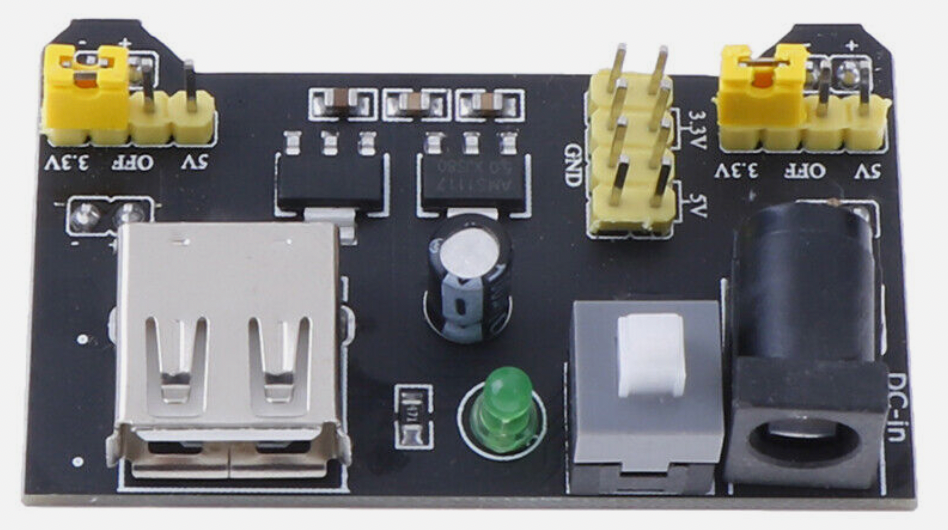
Many Beginning Electronics kits come with a breadboard-ready power supply that can be plugged into a USB power supply or a barrel connector. If you are just getting started, this might be the best solution.
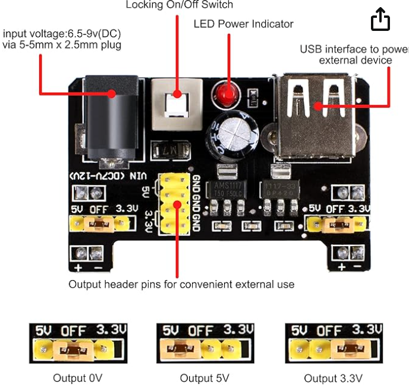
These boards have pins that are designed to fit directly into the power rails of your breadboard.
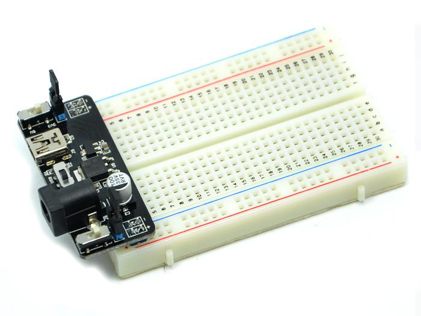
eBay Listing for MB-102 Breadboard Power Supply
DC Power Supply with Barrel Connector
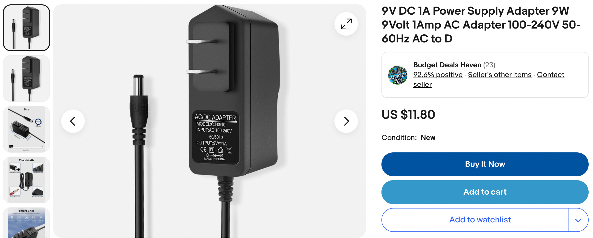
To use these, you must have a USB power or a barrel connector that provides at least 6.5 volts of DC power and no more than 12 volts. These usually have a 5.5mm (outer) x 2.5mm (inner) barrel connector.
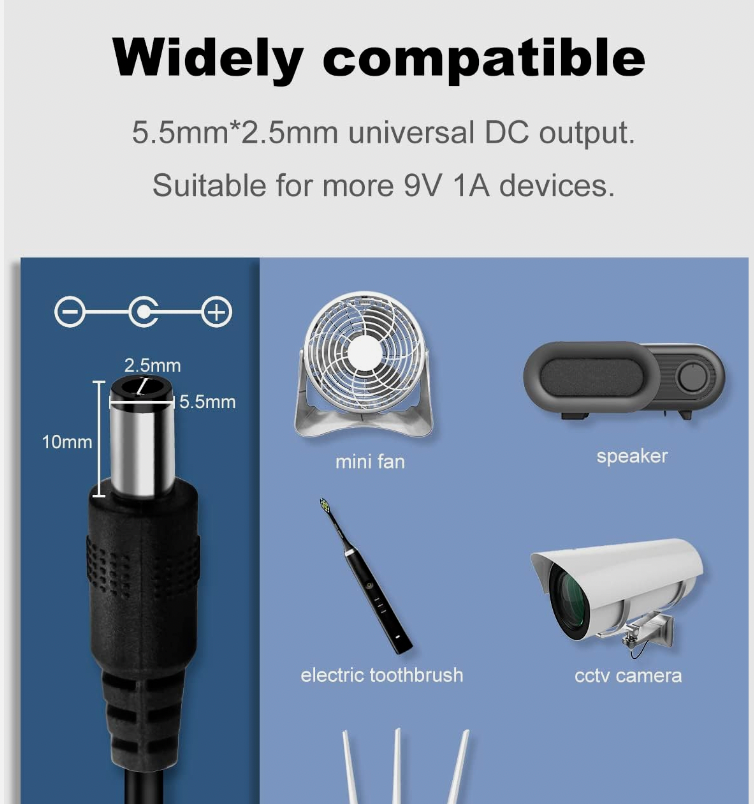
USB-Based Power Supply and Wall Adapters
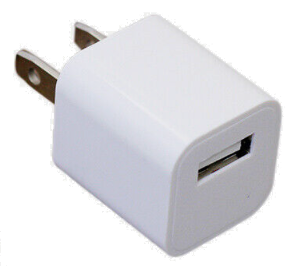
A 5V wall adapter, commonly used for charging phones or powering small electronics is a good way to get started. These adapters are readily available and can be inexpensive, especially if you have an old one lying around. We have found you can purchase 10 of these on eBay for about $12.
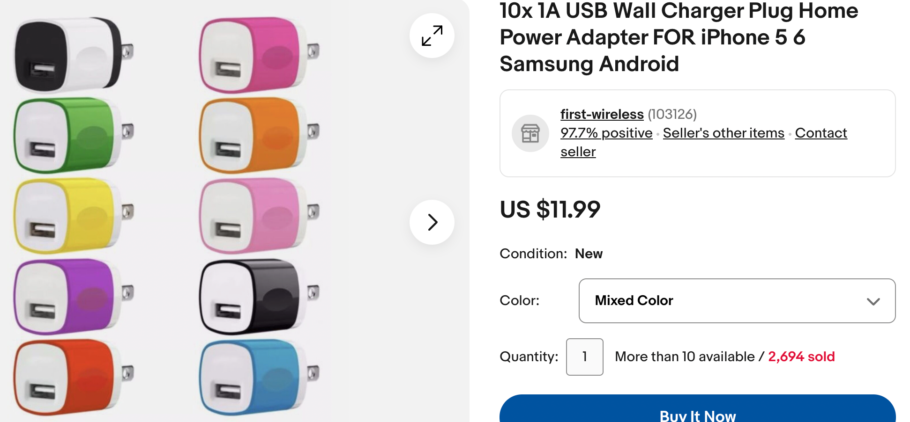
We suggest getting the multi-color package.
Note that these are listed at 1A but my suggestion is to keep them from being used over 750 milliamps to extend their life.
You must also remember to get USB cables for these.
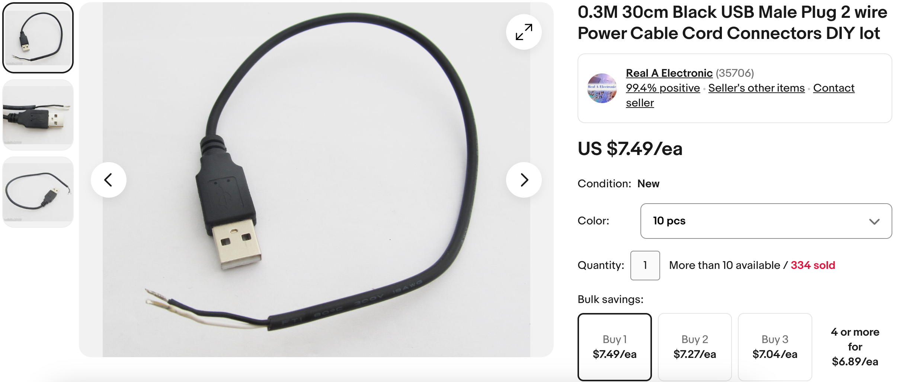 Sample eBay Listing for USB Cables
Many schools have old USB connectors sitting around and these can be used with some soldering and 22-gauge solid wire hookup cable.
Battery-Based Power Supply
Standard batteries (like AA or AAA) and a battery holder is another good low-cost option. We combine 2 or 3 batteries to achieve a total of 3 or 4.5 volts. We like to purchase our batteries in bulk at stores like CostCo.
We can find battery cases on eBay for about $1.10 each in quantity 10.
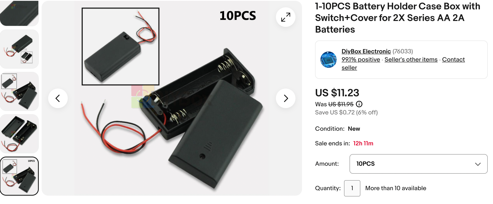
eBay Search for 10PCS 3X AA Black Battery Holder Case
Using a Voltage Regulator
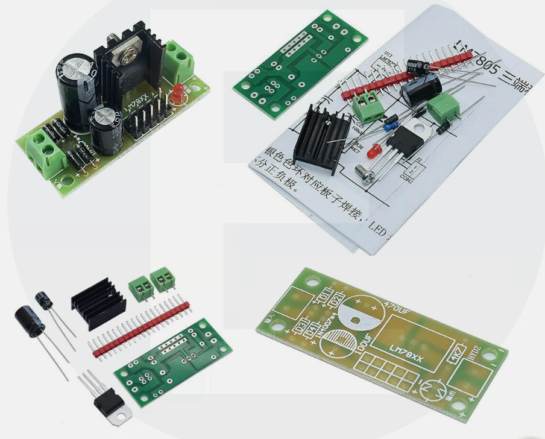
A basic LM7805 voltage regulator (very inexpensive), capacitors, and a power source greater than 5V.
The LM7805 takes an input voltage (up to 35V) and regulates it down to 5V. It's a bit more technical but very reliable.
Buck Converters
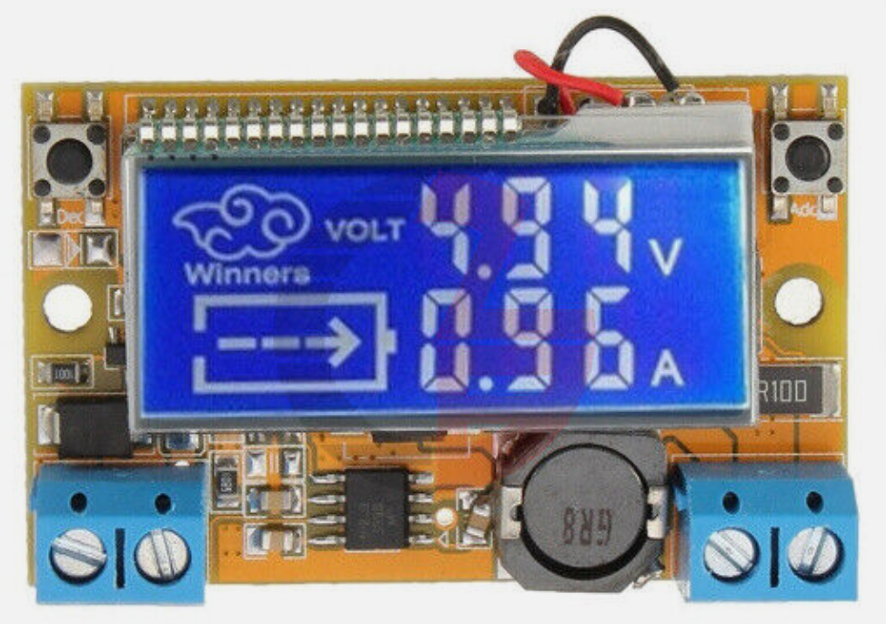
eBay listing for Adjustable Buck Converted With Voltage and Current Display
A buck converter module converts a high-voltage DC power supply to a lower DC voltage. They are low-cost (usually a few dollars) but can help you reuse old laptop power supplies or transformers used for powering and charging devices.
Buck converters come in several types.
- Fixed voltage output (typically 5 volts)
- Adjustable output - where you change a potentiometer to adjust the output voltage
- Adjustable output with voltage and current display
Some higher-end buck converters also have a display to show you what the current output voltage setting.
$1.50 buck converter that converts 9, 12 or 18 volts down to 5 vold
-
DIY Approach with Components:
- Materials: Basic electronic components like resistors, diodes, capacitors, and a transformer.
- Method: This is more complex and involves creating a rectifier circuit to convert AC to DC and then regulate the voltage to 5V. It's suitable for those with electronics knowledge.
Safety Note:
- Skill Level: The complexity varies from beginner (USB-based) to advanced (DIY with components). Choose a method that matches your skill level.
- Safety: Always be cautious when working with electricity. Make sure to use components within their rated specifications to avoid overheating or damage.
Cost-Effective Tips:
- Reuse and Recycle: Often, the cheapest option is to repurpose an old power supply or electronic components you already have.
- Bulk Purchases: If you need multiple supplies, buying components in bulk can reduce the cost per unit.
- Online Marketplaces: Websites like eBay, and AliExpress, often have very inexpensive components, especially if you're willing to wait for shipping from international sellers.
Each method has its own advantages and is suited for different levels of expertise and available resources. For most hobbyists or simple projects, using an old USB cable or a wall adapter is often the easiest and least expensive option. For more advanced projects, building a power supply using a voltage regulator or a buck converter might be more appropriate. Remember to prioritize safety and ensure that your power supply is capable of handling the required current for your application.